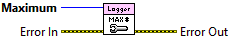

Error In describes error conditions that occur before this node runs. This input provides standard error in functionality.
Sets the maximum number of log files to keep on disk.
At the start of file logging, using the File Start VI, the number of on-disk log files at the configured root folder is inspected. If the number is greater than this value, then the oldest log file is deleted. During a rollover event, a similar check and deletion is conducted. This is generally known as "pruning". If the file count is zero (0), then no pruning is ever conducted.

|
|
Error In describes error conditions that occur before this node runs. This input provides standard error in functionality. |
|
|
Maximum is the number of log files to keep on-disk before deleting the oldest log file. A zero (0) indicates no log files will ever be deleted. |
|
|
Error Out contains error information. This output provides standard error out functionality. |